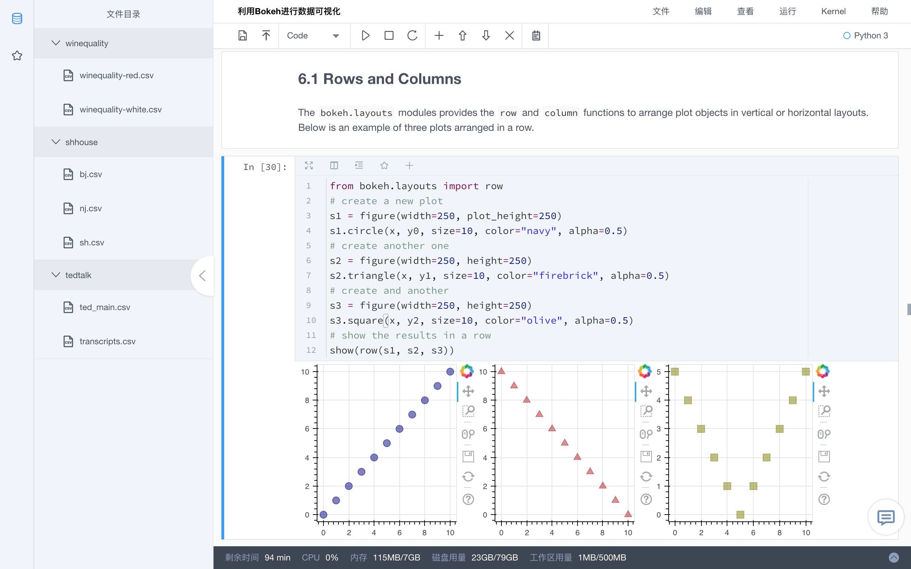

Org_Admin
K-Lab组织版 --- 管理员手册
欢迎使用K-Lab，在这个数据科学与人工智能社区内，你将会体验到全新的在线数据分析协作平台。
K-Lab是一款在线数据分析协作工具，通过在云端为用户管理所有底层基础架构，让数据工作者能够避免数据工程问题的困扰，快速连接数据、算力与模型，专注在数据价值的创造。有了K-Lab，用户能随时随地在浏览器中方便、快捷地进行数据处理、模型搭建、参数调优、数据可视化以及撰写报告等分析工作。
K-Lab针对组织内部的数据分析协作场景提供了K-Lab组织版产品形态，解决多用户场景下的管理难题与协作难题。

在K-Lab组织版内，我们为你提供：
- 在浏览器内可交互的Notebook(编程环境)
- 强健稳定的Kernel(计算环境)
- 个人独享的磁盘空间
- 丰富便捷的数据集
- 针对多成员协作的组织管理